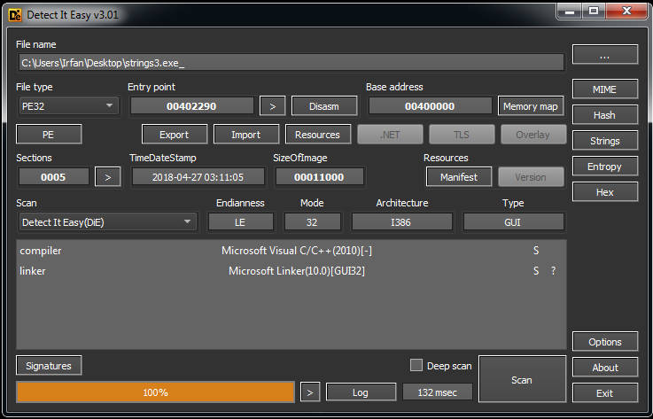
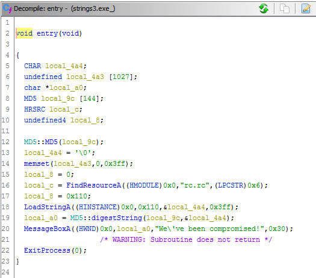
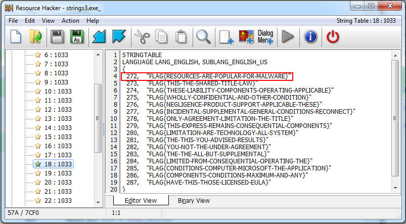
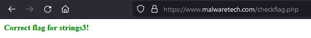

Reversing Stories - MalwareTech Challenge #3 Write-Ups
Windows Reversing
Strings3.exe
Still with the MalwareTech Windows reversing challenge, now we are given a PE file named strings3.exe_.
Also still with the same rules as the previous 2 (this and this), this challenge is static analysis only.
The description:
strings3.exe contains an un-encrypted flag stored within the executable. When run, the program will output an MD5 hash of the flag but not the original. Can you extract the flag?
detect it easy result:

Opened in Ghidra and go to the entry point function:

From the description, the results of the encryption will be displayed in this line:
MessageBoxA((HWND)0x0,local_a0,"We\'ve been compromised!",0x30); //local_a0 == encrypted flag
And the un-encrypted flag will be encrypted with MD5 in this line as the second parameter(input parameter):
local_a0 = MD5::digestString(local_9c,&local_4a4); //local_4a4 == un-encrypted flag buffer
Now we can hypothesize that the local_4a4 variable is un-encrypted flag buffer, and next, we will track what will be written in this buffer in this snippet code:
local_c = FindResourceA((HMODULE)0x0,"rc.rc",(LPCSTR)0x6);
local_8 = 0x110;
LoadStringA((HINSTANCE)0x0,0x110,&local_4a4,0x3ff);
FindResourceA will determine the location of the required resource then LoadStringA will load it in un-encrypted flag buffer (local_4a4), so we can conclude that the flag is stored in the resource section and to find it with static analysis we will use the following clues:
- The name of the resource => “rc.rc”.
- The resource type => (LPCSTR)0x6 == String-table entry.
- The identifier of the string to be loaded => 0x110 or 272 in decimal.
I opened in Resource Hacker and based on the clue above, this is what i found:

Let’s check this flag FLAG{RESOURCES-ARE-POPULAR-FOR-MALWARE} :

We’ve got the flag.
Challenge source: https://www.malwaretech.com/challenges/windows-reversing/strings3